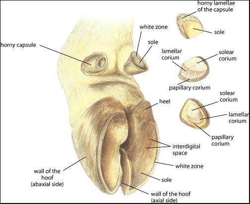

What are Hooves
A Hoof (plural: Hooves) is the horny part of the foot. The hoof is an integral part of any cow's existence. In order to support the cow's mass, the hoof must be both durable and plyable. Hooves have evolved a unique anatomy because of these constraints.
The hoof is made out of three major parts: the Dorsal Hoof Wall, the interior sole, and the internal corium. Both the sole and the hoof wall are made of horn, making them the horny parts of the hoof. However, these two parts have different characteristics that diferentiate them.
The dorsal hoof wall surrounds the sole of the hoof, and is made out of a horny material that is harder than the inside sole. As the main load bearing part of the hoof, it is both rigid and durable, very rarely needing any mantainence other than trimming.
In contrast to this, the interior sole is made out of a very plyable horny material. As the dorsal hoof wall bears most of the cow's weight, the sole is designed to support the dorsal hoof wall, preventing it from cracking or growing malformed.
Both the dorsal hoof wall and the interior sole are generated by and protecting the soft fleshy corium. The corium of the hoof is the fleshy area underneath the horny hoof bits. It is responsible for generating the horny material for the rest of the hoof. However, as it is the most delicate portion of the hoof, it often gets injured and infected, making proper hoof mantainence extremely important.
For tips on mantaining your hooves, click here.